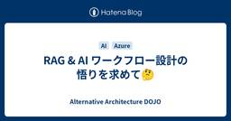
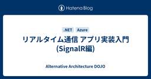
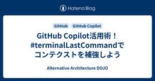
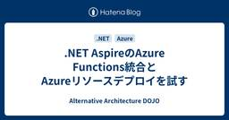

Alternative Architecture DOJO
https://aadojo.alterbooth.com/
オルターブースのクラウドネイティブ特化型ブログです。
フィード
CRMとSFAのデータを綺麗にする。M365 Copilotの活用
Alternative Architecture DOJO
M365 Copliを活用した、「データの名寄せ作業」についての活用例をご紹介したいと思います。
13時間前
【続】PayPayで作るお店屋さんごっこ用レジ作成(完成)
Alternative Architecture DOJO
こんにちは！オルターブースで一番レアキャラとなった気がするエンジニアのふるのです！ この記事はオルターブース Advent Calendar 2024の18日目の記事です。 昨日は馬場さんの「【Azure Monitor】デプロイ失敗の通知をLogic Appsを使ってやってみる」でした！ aadojo.alterbooth.com みなさんこちらの記事は記憶にありますでしょうか。。。 https://aadojo.alterbooth.com/entry/2022/12/14/100104 そう、一昨年に作成したがエラーが解消できず完成できなかったネタです。 長女が最近お金を使うことも増えて…
1日前
【最新】Visual Studio Code拡張機能のGitHub Copilot（github.copilot）設定を解説
Alternative Architecture DOJO
こんにちは！しんば@shinbazです！ 今年もいよいよあと2週間で仕事納めですね。 私は最後まで出張でバタバタしそうです。 さて、みなさんGitHub Copilotはどのエディタで利用されていますか？ 今回は、GitHub Copilot更新が最も早く降りてくることが多いVisual Studio Code拡張機能のGitHub Copilot（github.copilot）設定を改めて振り返ってみたいと思います！ GitHub Copilot Chatの拡張機能については別記事となります。 （～公開次第リンクを挿入予定～） 本日時点（2024年12月17日）でのGitHub Copilo…
3日前
【Azure Monitor】デプロイ失敗の通知をLogic Appsを使ってやってみる 1
1
Alternative Architecture DOJO
adventar.org こんにちは、エンジニアの馬場です！ この記事はオルターブース Advent Calendar 2024の17日目の記事です。 昨日は角田さんの「AIの進化に触れる：Microsoft Copilot Studioの魅力」でした～！ aadojo.alterbooth.com 今回は最近起こったこととその解決方法についてブログ記事にしたいと思います。 ざっくりあらすじを言うと、「デプロイをIaCで自動化したのはいいが、そのデプロイが失敗した場合に何か通知が欲しい」ということです。 IaC非常に便利ですよね！わたしも最近Bicepに触れる機会がありまして、その便利さに感動…
3日前
AIの進化に触れる：Microsoft Copilot Studioの魅力
Alternative Architecture DOJO
こんにちは、オルターブースのかどたです。 オルターブース Advent Calendar 2024 の16日目を担当します！ 時の流れは本当に早いもので、今年も残りわずかとなりました。これから本格的に寒くなっていくようですので、皆さんお身体を大事にお過ごしくださいね。 さて、今年もやっぱり AI！AI！AI！で話題の尽きない一年となりました。 私自身も沢山お世話になりましたので、今日はその数ある AI ツールの一つ Microsoft Copilot Studio について書きたいと思います！ Microsoft Copilot Studio とは Microsoft の公式サイト ではこのよ…
4日前
インデックス作成がもっと簡単に！多様なファイルをマークダウン化するMicrosoft製のライブラリMarkItDownを使ってみた。 1
Alternative Architecture DOJO
adventar.org こんにちは！オルターブースの木村龍太郎です！ この記事はオルターブース Advent Calendar 2024の15日目の記事です。 最近、RAG（Retrieval Augmented Generation）の構築を行いたく、CosmosDB for NoSQLでベクトル検索を試したいというニーズがありました。 ベクトル ストア - Azure Cosmos DB for NoSQL | Microsoft Learn そのため、格納したいデータはベクトル化しないとCosmosDBに保存できないので、 その前処理として、Word、Excel、PowerPointな…
4日前
開発環境を統一しよう！GitHub Codespacesを利用して環境作りを時短！
Alternative Architecture DOJO
こんにちは！しんば@shinbazです！ 東京、想像より寒く、つい温かい上着を購入し早速着ています😂 実は先日GitHub Sales Professionalという資格を取得しました。 GitHubサービスに関する一定の知識があることを証明するものなのですが、 GitHub社が準備するSales Materialsへの早期アクセスなども不定期的にあるらしく、楽しみです！ GitHubのご相談を受けていると、「コード管理とGitHub Copilot以外になにがあるの？」と聞かれることがあります。 GitHubにはたくさんの機能があるのですが、今回はその中でも Codespaces （コードス…
6日前

RAG & AI ワークフロー設計の悟りを求めて🤔
Alternative Architecture DOJO
はじめに こんにちは。寒すぎて手袋をつけてキーボードが叩けるように成りたいと考えている釘宮です。 今回は、RAG を含めた AI ワークフローを実現する際の設計で 四苦八苦 したので、その時に考えていた事と試した事についてご紹介します。 本記事はオルターブース Advent Calendar 2024の14日目の記事です。 (14日の土曜日です) adventar.org RAG とは 人工知能（AI）の進化に伴い、Retrieval Augmented Generation (RAG) は、情報検索と自然言語生成を融合させた革新的な手法として注目を集めています。RAGは、大規模言語モデル（L…
6日前

リアルタイム通信 アプリ実装入門(SignalR編)
Alternative Architecture DOJO
こんにちは！！ オルターブースの 倉地 です。 本記事はオルターブース Advent Calendar 2024の13日目の記事です。(13日の金曜日です) adventar.org はじめに .NETでリアルタイム通信を行うアプリを作ろうと思い通信処理に WebSocket を使おうと考えていたところ、「.NETでリアルタイム通信を実装する場合は、フォールバック等の考慮を含む接続処理やメッセージ送信処理を機能として備えており、WebSocket はもちろんそれ以外のプロトコルにも対応している SignalR がおすすめ」という情報を見つけました。今回は、その SignalR に関連して、 A…
6日前

GitHub Copilot活用術！#terminalLastCommandでコンテクストを補強しよう 1
Alternative Architecture DOJO
おはようございます、しんば@shinbazです！ 昨日から東京入りしているのですが、急激に寒くなってきました。急ぎ上着を準備しています・笑 本日はGitHub Copilot活用のためのTipsを1つご紹介したいと思います！ みなさん、 #terminalLastCommand は利用していますか？ #terminalLastCommandとは GitHub Copilotは、ユーザーが提供するコンテクスト（文脈情報）を利用し、合理的な提案を生成します。 コンテクストというのは、プロジェクトやコードを生成するための背景のことで、あらかじめGitHub Copilotに参照してほしいコードやファ…
7日前

.NET AspireのAzure Functions統合とAzureリソースデプロイを試す
Alternative Architecture DOJO
adventar.org こんにちは、MLBお兄さんこと松村です。 この記事はオルターブース Advent Calendar 2024の12日目の記事です。 昨日は花岡くんの「拡張性と保守性を高めるMediatR入門」でした。 aadojo.alterbooth.com 先日11月12日に .NET 9 が正式リリースとなりました。 .NET 9のリリースに合わせて、.NET Aspire もバージョン 9.0 がリリースとなっています。 dotnet.microsoft.com .NET Aspire 9.0 のアップデート内容の一つに、Azure Functions との統合があります。 …
8日前

拡張性と保守性を高めるMediatR入門
Alternative Architecture DOJO
こんにちは、オルターブース花岡です。@karyu721 本記事はオルターブース Advent Calendar 2024の11日目の記事です。 adventar.org はじめに ここ最近冷え込んでいますね。ダウンジャケットやコートが活躍する場面が増え、ますます本格的な冬が近づいているなあと感じるこの頃です。 さて、今回は.NETのライブラリMediatRを使ってCQS（コマンドクエリ分離の原則）やインプロセス内でのメッセージング処理について学んだので、コードを交えて解説します。 MediatRとは github.com MediatRはデザインパターンの一つであるMediatorパターンを.…
8日前
JAZUG Fukuoka リブートイベントでショートセッションを行いました
Alternative Architecture DOJO
はじめに こんにちは！最近ますます寒くなってきておりダウンジャケットの購入したやしきんです🧥 今回は今月行われた第1回 JAZUG Fukuoka リブートイベントと、ショートセッションでお話したことを書きました。 JAZUG Fukuoka とは JAZUG Fukuokaは、JAZUG(Microsoft Azureの日本のユーザーグループ)の福岡支部になります。 https://jazug.connpass.com/event/334629/ 以前は「ふくあず」というコミュニティでしたが、今回「ふくあず」をリニューアルして「JAZUG Fukuoka」となりました。 再始動ということでリ…
10日前
Azure Load Testing ネットワーク制限下での負荷テスト & 2024 アップデート振り返り!
Alternative Architecture DOJO
こんにちは！オルターブースのいけだです！ オルターブース アドベントカレンダー2024 9日目を担当します！ adventar.org 今回は、Azure Load Testing を活用して、ネットワーク制限下における負荷テストを実施してみます。 また、最後に2024年における Azure Load Testing の主なアップデートを振り返り、その進化を確認していこうと思います！💪 learn.microsoft.com 目次 目次 ネットワーク制限のある対象への負荷テスト 事前準備 Azure Load Testing 負荷テスト作成~実施 仮想ネットワーク統合 さいごに - 2024年…
11日前
Azure Administrator Associate 受験体験記
Alternative Architecture DOJO
はじめに こんにちは、すっかり寒くなってこたつに入り始めたやしきんです！ オフィス周辺や博多駅周辺でクリスマスマーケットも始まり、年末の雰囲気が漂っていますね。 今回は先日合格した Azure Administrator Associate について記事を書きました👍 Azure Administrator Associateとは Azure Administrator Associateとは、Micorosoft Azure の認定資格です。 レベルは Associate ですので中級になります。また特に管理者向けの試験となっています。 learn.microsoft.com オルターブース…
11日前
GitHub Enterprise Cloud とEnterpriseアカウントと Organization について
Alternative Architecture DOJO
GitHub Enterprise Cloud とEnterpriseアカウントと Organization について
12日前
GitHub.comのダッシュボードにGitHub Copilotがやってきた！（public preview）
Alternative Architecture DOJO
こんばんは、しんばです！@shinbaz 12月5日付けで、GitHub.comダッシュボードページ（GitHubログインしてすぐに出てくるところ）にGitHub Copilotが登場しました。 どうやら特別な仕様が追加されているわけではなさそう・・・ですがGitHubを開いた瞬間からGitHub CopilotにAskできる様になりましたね。 Dashboardに表示されました！ GitHub.com上のGitHub Copilotの使い道 GitHub CopilotはGitHub APIを扱うことができる（すべてのAPIが扱えるのか、レートがあるのかなどは不明）ので、「最近私がアサインさ…
13日前
Azure Boardsでタスクを管理しながら、GitHubで開発する
Alternative Architecture DOJO
こんばんは、しんばです！@shinbaz ScrumやKanbanのフレームワークに柔軟に対応したり、ベロシティグラフの活用など、組織的な様々な要件から、タスク管理はAzure Boards、その他コード管理やAI開発においてはGitHubを利用する、というニーズがあります。 この記事では、これら2つのプラットフォームを連携させ、より組織のニーズにマッチした開発環境を整えてみます！ やったこと & できたこと Azure DevOps（Azure Boards）とGitHubのリポジトリを連携する Azure Boardsにタスクを起票し、GitHub上でコードを修正しプッシュ。そのアップデー…
13日前
GitHub Copilot Extensions クイックスタート
Alternative Architecture DOJO
こんにちは！エンジニアのみっつーです。 この投稿は、オルターブース Advent Calendar 2024の6日目の投稿になります！ adventar.org 昨日は弊社広報担当による今年のイベント振り返りでした！ aadojo.alterbooth.com 前置き 今回の内容は、GitHub Copilot Extensionsを実装するための環境セットアップ方法についてです。 先日サンフランシスコで開催されたGitHub Universeのエキスパートコーナーで「GitHub Copilot Extensionsをぜひ試してみて！」と教えていただいた経緯もあり、とりあえずサンプルを動かす…
14日前
【GitHub Spark】自然言語のみでToDoアプリを作ってみた！
Alternative Architecture DOJO
こんにちは！ GitHub Universe波にまだまだ乗っていきたい、めゆです！🌊 先日、GitHub Sparkが自分の環境で使えるようになったので、GitHub Sparkを利用してTodoアプリを作成してみました。 GitHub Sparkとは？ GitHub Sparkとは簡単に言うと、自然言語のみでコーディングなしに、アプリを作れるツールです。 GitHub Sparkに関しての詳細は下記をご覧ください。 githubnext.com GitHub Sparkの始め方 GitHub Sparkは現在テクニカルプレビューのため下記のWaitリストに登録し、通過するまで待つ必要がありま…
14日前
新しい知識と発見：2024年のイベント振り返り
Alternative Architecture DOJO
皆さん、こんにちは。 オルターブースの広報担当のSです！！！ 2024年も多くのイベントが開催されたし、弊社主催でも開催しました！ そして、毎回さまざまな学びと発見がありました。 今回は、実際に現地で参加して、特に印象に残ったイベントを振り返り、そのハイライトを紹介します。 PHPカンファレンス福岡2024 2024年6月22日に開催されたPHPカンファレンス福岡2024は、PHPコミュニティの一大イベントでした。福岡ファッションビルで行われたこのカンファレンスでは、最新のPHP技術やトレンドについてのセッションが多数行われました。 参加者の皆さんの、PHP愛が伝わってくるこのイベントでは、非…
14日前
営業担当によるMicrosoft 365 Copilot 活用Tips
Alternative Architecture DOJO
こんにちは。オルターブース営業担当の井上です。 本記事は、アドベントカレンダー4日目の記事となります。 早速ですが、営業って毎日忙しいですよね。お客様の対応、資料作成、会議、議事録、見積もり、契約、請求作業とやることは山積み、そして多岐にわたります。この記事では、営業担当の視点でCopilotをどのように活用しているのか、その活用法を紹介したいと思います。普段営業としてがんばっているみなさまの業務効率化のために少しでもお役に立てますように。 1. タスクの確認、整理 今となってはこれが欠かせません。私は毎日退勤前に、翌日やることを箇条書きにして書き出していますが、タスクの整理、抜け漏れがないか…
16日前
GitHubのMilestonesを使って毎日のタスクを管理する
Alternative Architecture DOJO
こんにちは！オルターブースのエンジニア はっしーです！ オルターブース アドベントカレンダー2024 3日目を担当します！ adventar.org 概要 この記事ではGitHub Milestonesを使用して、毎日のタスクを管理できないか試してみたので紹介したいと思います。 GitHubのMilestones Milestonesはリポジトリ中のIssueやプルリクエストをグループ化し、進捗の追跡などに使用できる機能です。 docs.github.com 主な特徴として以下の点が挙げられます。 Issueやプルリクエストをグループ化できる マイルストーンの期限日が設定できる マイルストーン…
16日前
ADEで小さく始めるPlatform engineering
Alternative Architecture DOJO
※本記事はInfocom Advent Calendar 20243日目の記事になります！ こんにちはオルターブースのいけだです！ 毎年「寒い寒い！寒すぎる～！」と自宅で騒いでいるので娘がホッカイロをプレゼントしてくれました。 ありがとう。それだけで温まります。 はい、ということで早速ですが、表題の「ADEで小さく始めるPlatform engineering」についての話題に移ります！ Platform Engineering プラットフォームエンジニアリングとは、開発チームがより安全に、効率的に、そして迅速にソフトウェアを開発できるように、DevOps の原則に基づいたプラクティスです。 …
17日前
2024年にGitHubが公開した機能総まとめ！
Alternative Architecture DOJO
こんにちは、オルターブースの清島です！ オルターブース アドベントカレンダー2024 2日目のこの記事では、2024年にGitHubが公開（一般提供、またはパブリックプレビューを開始）した機能を振り返ります！ 今年もGitHubにはCopilotを筆頭に数多くのアップデートがありましたが、それらの中でも公開された機能をピックアップし、カテゴリごとにまとめてみました。 ※2024年11月24日時点で、GitHub Blogで確認できる一般提供またはパブリックプレビューの記事を抽出しています。 一般提供が開始された機能 Copilot 1月 GitHub Copilot Chat now gene…
18日前
とにかくMicrosoft To Doでタスクを管理する
Alternative Architecture DOJO
オルターブース アドベントカレンダー2024の開幕です。 adventar.org Microsoft To Doとは Microsoft To Doは、Microsoftが提供しているタスク管理アプリです。iOS、Android、Windows、macOS、Webブラウザなど、様々なプラットフォームで利用できます。当社はMicrosoft 365を利用しているので、Microsoft To Doも利用できる環境にあります。 困っていること 当社でプロジェクト管理にはGitHub、Azrue DevOps、Backlogを主に利用しています。また案件に応じてお客様環境のプロジェクト管理ツールを…
19日前
Microsoft Ignite 2024 Day3 現地レポート！
Alternative Architecture DOJO
こんにちは！オルターブースのエンジニア はっしーです！ 現在、アメリカのシカゴでMicrosoft Ignite 2024に参加しています。 Microsoft Ignite 2024 は11/18 ~ 11/22の4日間開催されます。 Day3 参加の様子をお伝えしていきます！ ※Day1、Day2の様子はこちらをご覧ください。 Day1 aadojo.alterbooth.com Day2 aadojo.alterbooth.com Day3 Day3 も8:30のLABからスタートしました。 LAB「Build intelligent Apps with Azure Functions …
1ヶ月前
【速報】Microsoft Ignite 2024 現地の様子をお届けします！Day3
Alternative Architecture DOJO
こんにちは、オルターブースの中島です。 昨日の夜からものすごく寒く感じていたのですが、シカゴでは朝から雪が降っていました⛄ シカゴで真冬の服装をしているのは私たちくらいじゃないかと思うほど、海外の方々は薄着なんです。先日までは半そでTシャツやパーカー1枚の方を見かけていました👀 Microsoft Ignite 2024 Day3 本日も朝からCopilot Studio のセッションに参加しました。 Copilot Session1 Copilot Studio Session 2 セッションが終わり廊下にでると外が吹雪で雪が積もっているのが見えてびっくりしました👀 朝ごはん 本日の朝ごはん…
1ヶ月前